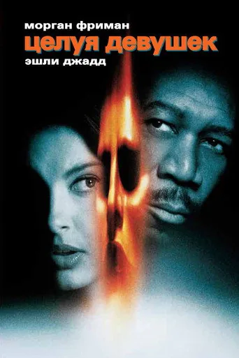

Целуя девушек 1997
Похищено восемь молодых, красивых и талантливых женщин. Все они могут погибнуть, если полицейский Алекс Кросс не сможет обнаружить логово неуловимого маньяка, который называет себя Казанова. От городков Дальнего Юга до побережья Калифорнии разворачивается охота. Энергичной свидетельнице Кейт Мактайрнан единственной удаётся вырваться из лап Казановы, и теперь её цель - помочь Алексу освободить остальных жертв.
Открыть в каталогеДанные и постеры принадлежат их правообладателям. Этот продукт использует TMDB API, но не одобрен и не сертифицирован TMDB.